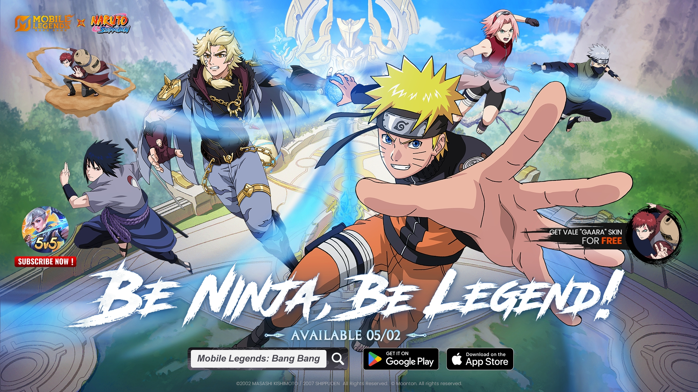
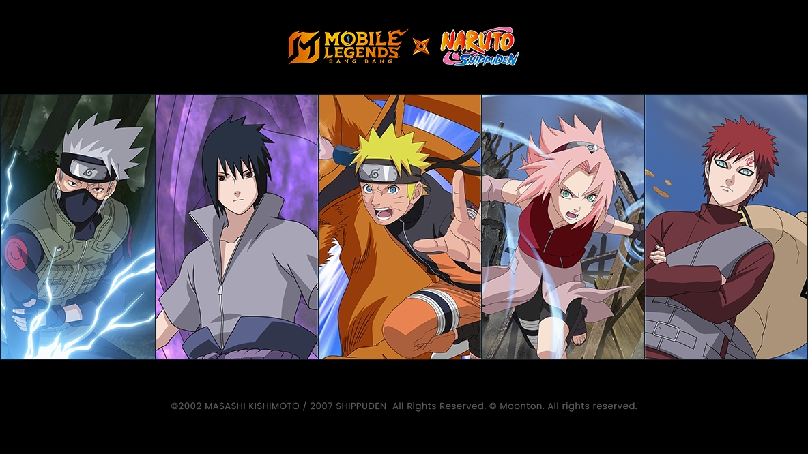
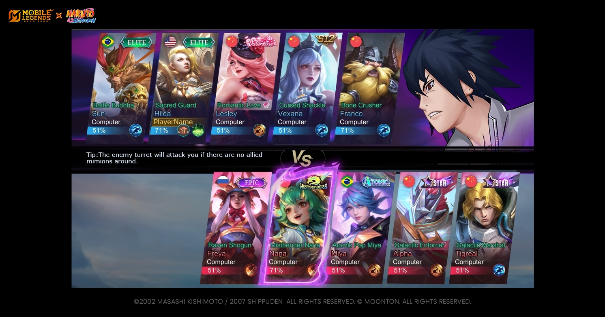
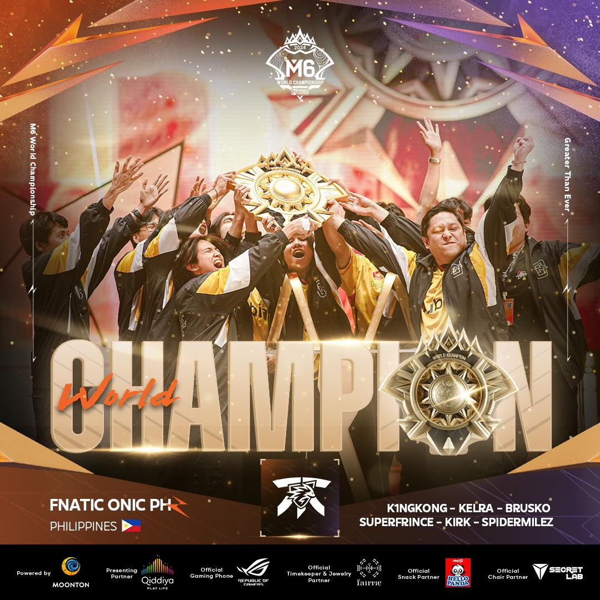

Mobile Legends: Bang Bang x NARUTO adalah kolaborasi terhebat dengan konten game yang paling banyak hadir!
MOONTON Games mengumumkan bahwa Mobile Legends: Bang Bang (MLBB) x NARUTO akan menghadirkan konten terbaru dalam sejarah game Multiplayer Online Battle Arena (MOBA) seluler tersebut. Tersedia di MLBB mulai 2 Mei 2025, kolaborasi bersejarah ini akan menghadirkan salah satu serial anime paling terkenal ke Land of Dawn dalam bentuk skin hero eksklusif, peta dan antarmuka game untuk waktu terbatas, serta banyak hadiah dan telur Paskah.
Acara crossover spesial ini akan memperkenalkan lima skin kolaborasi spesial: Naruto Uzumaki (sebagai Lukas), Sasuke Uchiha (sebagai Suyou), Sakura Haruno (sebagai Kalea), Kakashi Hatake (sebagai Hayabusa), dan Gaara (sebagai Vale). Pemain dapat mengklaim skin Vale "Gaara" secara gratis, sedangkan lainnya tersedia melalui pengundian.
Lyn Xi, NARUTO Collaboration Lead di MOONTON Games, menyatakan bahwa pemilihan hero MLBB untuk skin NARUTO membutuhkan waktu berbulan-bulan untuk pengujian dan penyempurnaan, dengan mempertimbangkan kesesuaian karakter dan pengalaman bermain.
Acara ini juga memperkenalkan item baru seperti Patung Suci Umum (misalnya Gamakichi) dan Efek Pemuatan untuk Naruto dan Sasuke. Item ini memberi tampilan eksklusif pada turret atau latar belakang layar pemuatan.

Fnatic Onic PH raih gelar M Series kelima berturut-turut untuk Filipina di M6 World Championship
Grand Final Kejuaraan Dunia M6 berakhir pada 14 Desember dengan kemenangan Fnatic Onic Philippines (FNOP) atas Team Liquid Indonesia (TLID) 4:1. Ini merupakan gelar kelima berturut-turut untuk Filipina sejak M2 pada 2021.
FNOP tampil tak terkalahkan dan memenangkan hadiah terbesar dari total USD 1 juta. Selangor Red Giants berada di posisi ketiga setelah kalah dari TLID di Final Lower Bracket. Pemain FNOP Duane "Kelra" Pillas dinobatkan sebagai FMVP.
Tim FNOP juga diperkuat oleh Kirk, K1NGKONG, Super Frince, Brusko, dan SpiderMilez. Pelatih kepala adalah Ynot, dengan YellyHaze sebagai asisten. M6 mencatat rekor penonton lebih dari 4,1 juta penayangan serentak, menjadi edisi Seri M ketiga terpopuler dalam sejarah.
Mobile Legends: Bang Bang (MLBB) adalah judul esports seluler yang paling banyak ditonton tahun 2024!

MLBB mencetak sejarah dengan lebih dari 475 juta jam tonton sepanjang tahun 2024, menurut Esports Charts. Kesuksesan ini didorong oleh turnamen besar seperti Mid Season Cup (MSC), MLBB Women's Invitational (MWI), dan M6 World Championship.
Mid Season Cup (MSC) 2024 menjadi yang paling menonjol di ajang Esports World Cup (EWC) dengan meraih jumlah penonton tertinggi dengan lebih dari 29 juta Hours Watched (HW) dan 2,38 juta Peak Concurrent Viewers (PCV). MLBB Women's Invitational (MWI) mengukir sejarah bukan hanya sebagai turnamen wanita pertama, tetapi juga dengan meraih 265.117 Peak Concurrent Viewers (PCV) selama Grand Final, melampaui rekor sebelumnya yaitu 179.024. Sementara itu, M6 World Championship mencetak rekor baru sebagai ajang M Series yang paling banyak ditonton sepanjang masa, dengan melampaui 85 juta jam tonton.
MPL (Mobile Legends Professional League) juga mencetak sejarah dengan melampaui 1 miliar jam tonton secara global, memperkuat posisi MLBB sebagai raja esports seluler global.